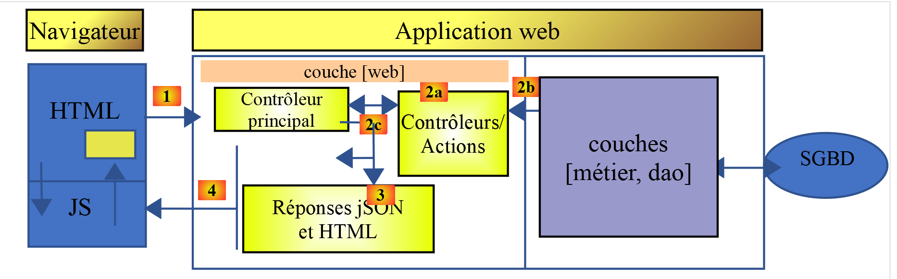

1. Introduction to the ECMASCRIPT 6 language
The PDF of this article is available |HERE|.
The examples in this article are available |HERE|.
This document is part of a series of four articles:
- [Introduction to the PHP7 Language Through Examples];
- [Introduction to ECMASCRIPT 6 through examples]. This is the current document;
- [Introduction to the VUE.JS framework through examples];
- [Introduction to the NUXT.JS framework through examples];
These are all documents for beginners. The articles follow a logical sequence but are loosely connected:
- document [1] introduces the PHP 7 language. Readers interested only in PHP and not in the JavaScript covered in the following articles should stop here;
- Documents [2–4] aim to build a JavaScript client for the tax calculation server developed in document [1];
- The JavaScript frameworks [Vue.js] and [Nuxt.js] in Articles 3 and 4 require knowledge of the latest versions of ECMAScript, specifically version 6. Document [2] is therefore intended for those unfamiliar with this version of JavaScript. It refers to the tax calculation server built in document [1]. Readers of [2] will therefore sometimes need to refer back to document [1];
- once ECMASCRIPT 6 has been mastered, we can move on to the VUE.JS framework, which allows for the creation of JavaScript clients running in a browser in SPA (Single Page Application) mode. This is document [3]. It refers to both the tax calculation server built in document [1] and the standalone JavaScript client code built in [2]. Readers of [3] will therefore sometimes need to refer to documents [1] and [2];
- Once you have mastered VUE.JS, you can move on to the NUXT.JS framework, which allows you to build JavaScript clients that run in a browser in SSR (Server Side Rendered) mode. It refers to the tax calculation server built in document [1], the standalone JavaScript client code built in [2], and the [vue.js] application developed in document [3]. Readers of [4] will therefore occasionally need to refer to documents [1], [2], and [3];
The latest version of the tax calculation server developed in document [1] can be improved in various ways:
- The current version is server-centric. The trend now (July 2019) is toward client-server architecture:
- the server operates as a JSON service;
- A static or dynamic page serves as the entry point for the web application. This page contains HTML/CSS as well as JavaScript;
- the other pages of the web application are generated dynamically by JavaScript:
- the HTML page can be generated by assembling static fragments, provided by the same server that served the home page, or built entirely by JavaScript;
- these different pages display data requested from the JSON service;
Thus, the work is distributed between the client and the server. The server, having its load reduced, can serve more users.
The architecture corresponding to this model is as follows:

JS: JavaScript
The JavaScript code is client-side:
- from a service providing static or non-static pages or fragments;
- a JSON service;
JavaScript code is therefore a JSON client and, as such, can be organized into layers [UI, business logic, DAO] (UI: User Interface), just like our JSON clients written in PHP. Ultimately, the browser loads only a single page—the home page. All other pages are fetched and rendered by JavaScript. This type of application is called an SPA (Single Page Application) or APU (Single Page Application).
This type of application is also part of what are known as AJAX applications: Asynchronous JavaScript and XML
- Asynchronous: because the JavaScript client’s calls to the JSON server are asynchronous;
- XML: because XML was the technology used before the advent of JSON. However, the acronym AJAX has been retained;
We will explore this architecture in the coming chapters. On the client side, we will use the JavaScript framework [Vue.js] [https://vuejs.org/] to write the JavaScript client for the PHP JSON server we described in document [1].
[Vue.js] is a JavaScript framework. To understand it, you must be proficient in this language. In this document, we present the ECMAScript 6 standard, which is the most recent (as of 2019) standardization of this language. The history and role of ECMAScript can be found on Wikipedia [https://fr.wikipedia.org/wiki/ECMAScript].
This document provides a list of JavaScript console scripts in various areas (language structures, database access, internet access, layered programming, and programming via interfaces). The document concludes with two applications:
A console application that will act as a client for the tax calculation server built in document [1]. This client will have the same architecture as the PHP console client built in document [1]:

- layers [7–9] will be those of the JavaScript client running in a console;
- layers [1–4] are those of the PHP 7 server built in document [1];
- unlike the PHP console client built in document [1], there will be no interactions with the local file system [6];
Here we have a client/server application where the client is a console application. A second application will be written where the code for layers [7–9] will be ported to a browser. We will then be ready to tackle the browser JavaScript frameworks in documents [3] and [4].
The scripts in this document are commented, and their console output is reproduced. Additional explanations are sometimes provided. The document requires active reading: to understand a script, you must read its code, its comments, and its execution results.
The examples in this document are available |here|.
The PHP 7 server application can be tested |here|.
Serge Tahé, October 2019